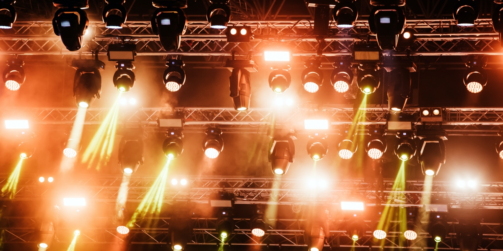
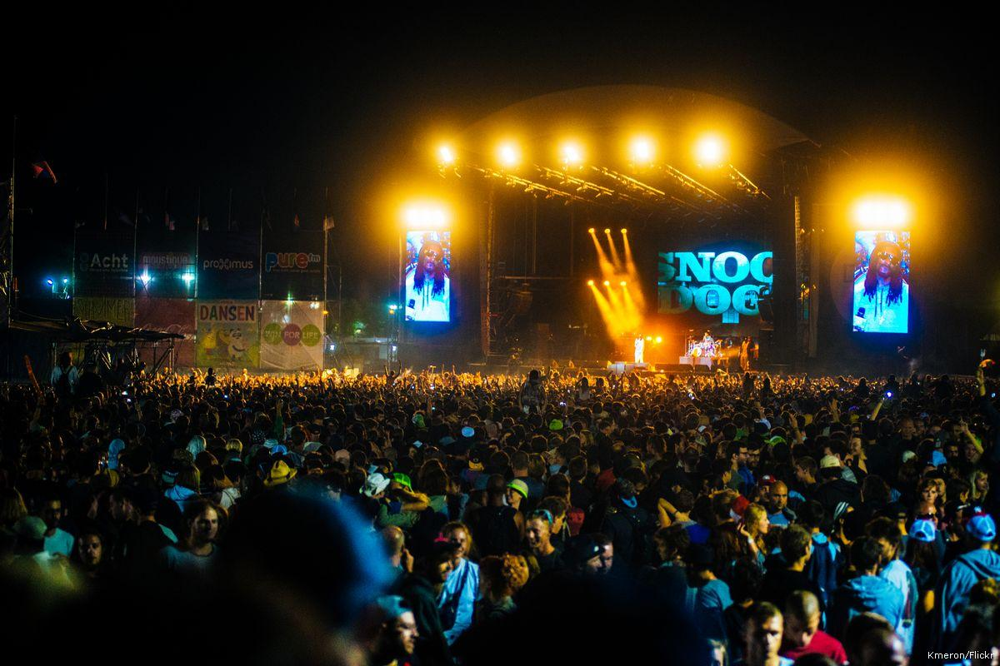
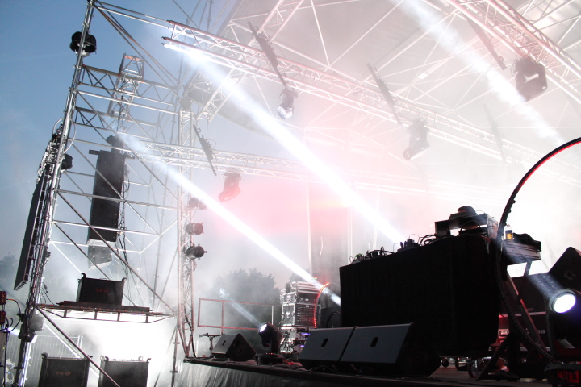
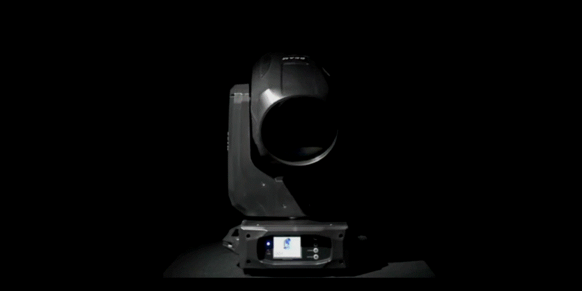
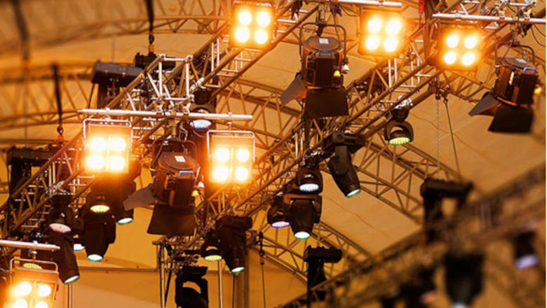

Mise en situation

Vous êtes dans une société qui installe de l'éclairage de scène. Vous internez avec vos 2 co-équipiers techniciens afin d'installer ce matériel sur les lieux d'utilisation.
Vous disposez d'un plan des locaux ainsi que des demandes du client, il s'agit pour vous chef d'équipe, d'organiser et de séquencer les tâches professionnelles d'installations.
Vous devrez commander à l'avance au magasin de stockage le matériel nécessaire à la réalisation de l'installation, commander ou réaliser le matériel manquant
Travail demandé

✓Analyser le cahier des charges et déduire de celui-ci les différentes tâches à mener afin d'aboutir à l'installation du système.
• Vous devez préparer et répartir le matériel à utiliser par les techniciens.
• Vous allouerez les taches à chacun des deux techniciens.
✓ Analyser les documentations des matériels utilisés. Vous devez être capable de justifier au jury vos choix des matériels vis-à-vis du cahier des charges et leur configuration.
• Vous devez être capable, avec la documentation, de répondre aux questions sur les caractéristiques techniques et l'utilisation des différents matériels qui seront mis en œuvre.
Protocole

• Connectez la console DMX à vos appareils d'éclairage via un câble DMX.
• Allumez la console et les appareils d'éclairage. Assurez-vous que chaque appareil est correctement adressé sur les canaux DMX que vous souhaitez utiliser pour l'animation.
• Appuyez sur le bouton "Program" pour accéder au mode de programmation.
• Sélectionnez le canal que vous souhaitez programmer en appuyant sur les touches de flèche.
• Utilisez les boutons de la console pour régler les paramètres de l'animation que vous souhaitez créer, tels que la vitesse, la direction et les couleurs.
• Utilisez les boutons "Record" ou "Add" pour enregistrer votre programme d'animation sur le canal sélectionné.
• Répétez les étapes 4 à 6 pour programmer d'autres canaux ou d'autres parties de votre animation.
• Utilisez les boutons de la console pour lancer votre animation en temps réel.
• Si vous souhaitez modifier ou supprimer une animation enregistrée, sélectionnez le canal correspondant et utilisez les boutons "Edit" ou "Delete".
• Une fois que vous avez terminé de programmer votre animation, appuyez sur le bouton "Exit" pour sortir du mode de programmation.
• Vous pouvez maintenant utiliser votre console DMX pour créer des spectacles d'éclairage uniques et captivants !
Adresse

• Assurez-vous que la LED DMX 512 36 est éteinte et que la console DMX est également éteinte.
• Repérez le commutateur DIP sur la LED DMX 512 36. Il s'agit généralement d'un petit groupe de commutateurs à bascule, situé sur le panneau arrière ou inférieur de la lumière.
• Consultez le manuel de la LED DMX 512 36 pour déterminer la configuration d'adresse DMX requise pour votre application. Par exemple, si vous voulez que la lumière soit adressée sur le canal DMX 1, vous devez configurer le premier commutateur DIP sur "ON" et les autres commutateurs DIP sur "OFF".
• Allumez la LED DMX 512 36.
• Allumez la console DMX.
• Sélectionnez le canal DMX approprié pour la LED DMX 512 36 dans votre logiciel ou votre console DMX.
• Envoyez une valeur de signal DMX correspondant à l'adresse DMX configurée sur la LED DMX 512 36. Cette valeur de signal peut être un fader DMX, un bouton, une commande MIDI ou tout autre type de signal contrôlant la console DMX.
• La LED DMX 512 36 devrait maintenant recevoir et répondre à la commande DMX.
Animation
Enregistrement

• Allumez la console DMX et assurez-vous qu'elle est bien connectée à tous les appareils que vous souhaitez contrôler.
• Appuyez sur le bouton "MODE" pour passer en mode "Programmation".
• Utilisez les boutons fléchés pour naviguer dans les différentes options de programmation.
• Sélectionnez "Créer une scène" ou "Créer un effet", en fonction de ce que vous souhaitez créer.
• Utilisez les boutons de la console pour sélectionner les canaux DMX que vous souhaitez contrôler pour créer votre animation.
• Utilisez les boutons fléchés pour définir les valeurs des canaux DMX pour chaque étape de votre animation.
• Enregistrez votre animation en appuyant sur le bouton "Enregistrer" et en sélectionnant l'emplacement de stockage souhaité.
Lecture de l'enregistrement

• Testez votre animation en passant en mode "Lecture" et en sélectionnant l'emplacement de stockage que vous avez enregistré.
• Si nécessaire, ajustez les valeurs des canaux DMX et enregistrez à nouveau votre animation jusqu'à ce qu'elle corresponde à vos besoins.
Ressource
| Matériels |
Quantité |
prix |
| caca |
pipi |
popo |
| ez² |
ez^3 |
ez^4 |